Vol.04 · Late Summer 2026 · presented by Apecoft Studio
Letters From
A Quiet Friend
A Quiet Friend
Some journeys stay quietly in the heart. A summer editorial on friendship, parallel moments, and the small days that matter most.
何気ない日々が、いちばん大切だった。
SuzuneShiori
Scroll
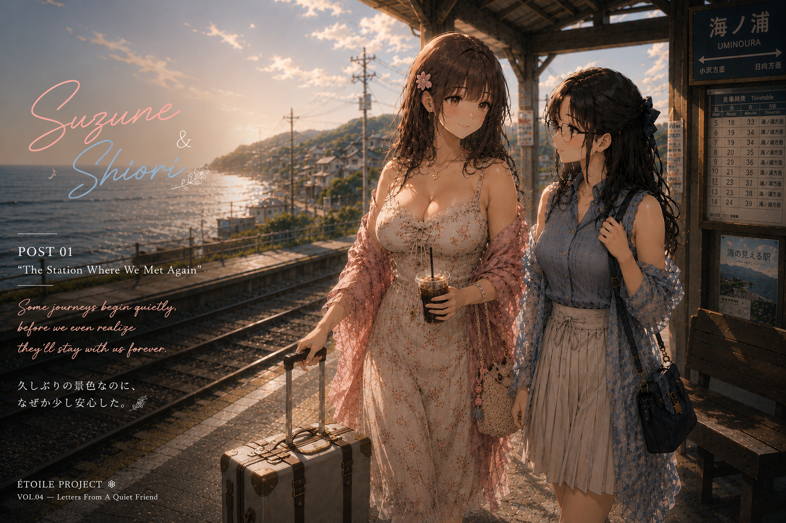
Post 01 · The Station Where We Met Again
"Some journeys begin quietly, before we even realize they'll stay with us forever."
海ノ浦. The coastal station where it all began. A familiar face on an unfamiliar platform.
久しぶりの景色なのに、なぜか少し安心した。
Suzune & Shiori · Post 01 — Letters01
"
"The same trip. The same skies. But every letter tells a different story."
"She carried a camera. I carried the words. Between us, we remembered everything."
同じ旅なのに、手紙を書くたびに、少しだけ違う場所にいた気がした。
カメラと言葉で、ふたりでひとつの夏を残した。
— Suzune's Letter · Vol.04
— Shiori's Letter · Vol.04
Reading
Suzune's Letter
Shiori's Letter
Post 02 · Wideview Day Train
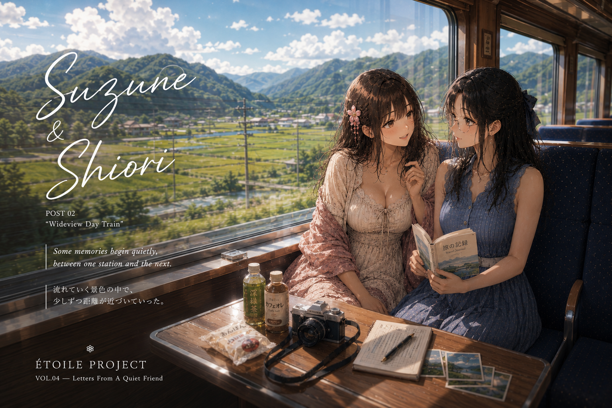
Suzune · Post 02 · Wideview Day Train
"Some memories begin quietly, between one station and the next."
The landscape blurred past the window. Shiori was reading. I was talking too much. She didn't seem to mind.
流れていく景色の中で、少しずつ距離が近づいていった。
Suzune · Post 02 — Letters02
Post 03 · Lanterns After Sunset
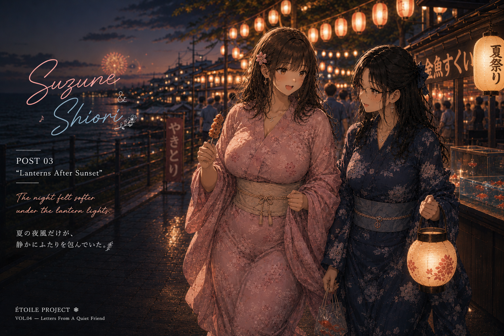
Suzune · Post 03 · Lanterns After Sunset
"The night felt softer under the lantern lights."
The summer festival along the coast. The fireworks started. Shiori held her lantern quietly. I had yakitori and was already on my second.
夏の夜風だけが、静かにふたりを包んでいた。
Suzune · Post 03 — Letters03
Post 04 · After The Aquarium
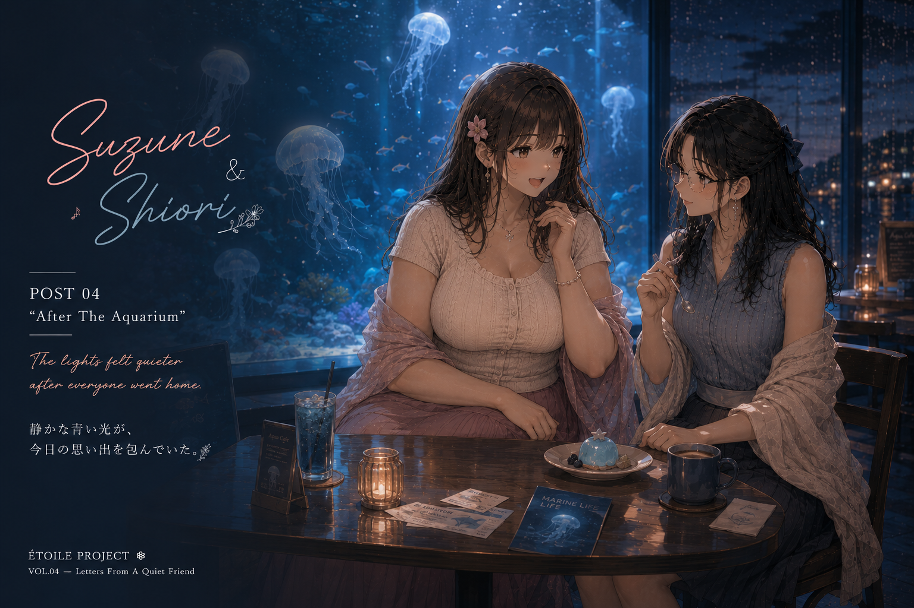
Suzune · Post 04 · After The Aquarium
"The lights felt quieter after everyone went home."
We stayed in the aquarium cafe long after closing time. Blue jellyfish floated above us. Neither of us wanted to leave.
静かな青い光が、今日の思い出を包んでいた。
Suzune · Post 04 — Letters04
Solo 01 · Rainy Morning Tea
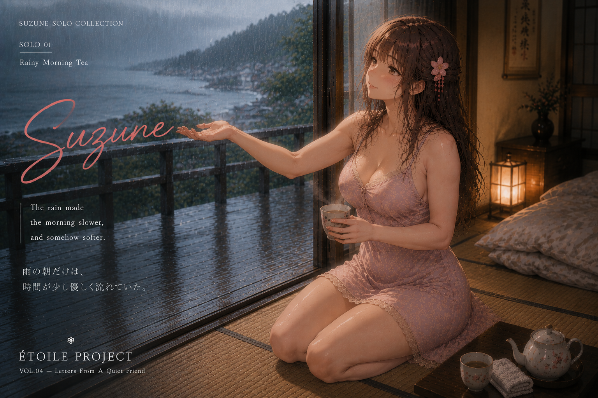
Suzune Solo
Suzune · Solo 01 · Rainy Morning Tea
"The rain made the morning slower, and somehow softer."
She was still asleep. I sat by the ryokan window with my tea and watched the coast disappear into the rain. I didn't take a photo. I just sat.
雨の朝だけは、時間が少し優しく流れていた。
Suzune · Solo 01 — Letters05
Post 06 · Night Train Home
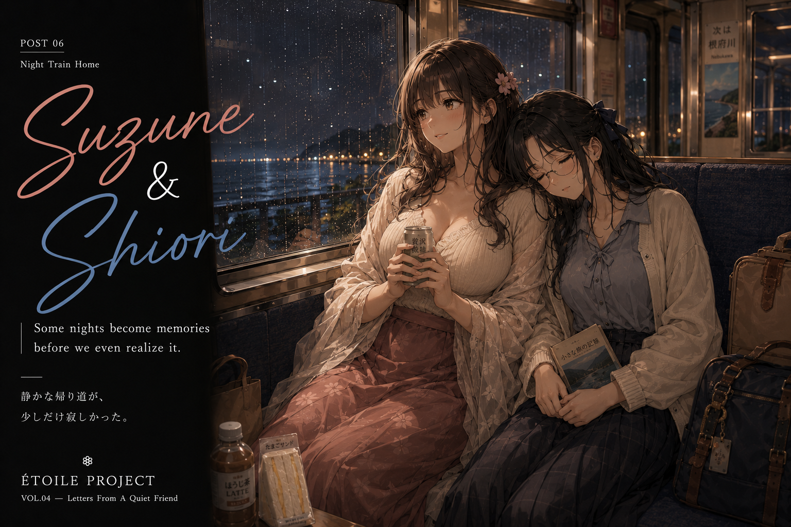
Suzune · Post 06 · Night Train Home
"Some nights become memories before we even realize it."
She fell asleep on my shoulder somewhere after 根府川. I held my drink very still. I didn't want her to wake up.
静かな帰り道が、少しだけ寂しかった。
Suzune · Post 06 — Letters06
Solo 02 · Sea Breeze
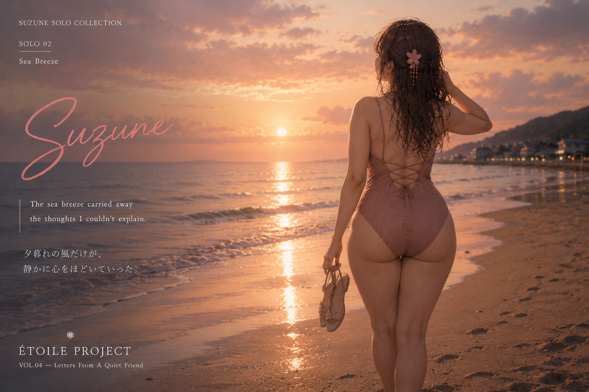
Suzune Solo
Suzune · Solo 02 · Sea Breeze
"The sea breeze carried away the thoughts I couldn't explain."
I walked into the water alone. The sun was going down behind me. Some feelings are easier to lose in the ocean than to put into words.
夕暮れの風だけが、静かに心をほどいていった。
Suzune · Solo 02 — Letters07
Post 07 · Festival Lights
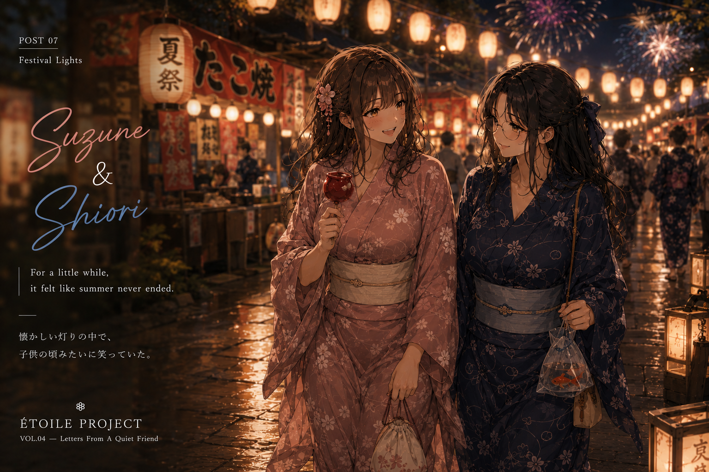
Suzune · Post 07 · Festival Lights
"For a little while, it felt like summer never ended."
Another festival. She'd caught a goldfish this time. I had a candied apple and got it all over my face. She photographed the lanterns instead of laughing at me. That's very Shiori.
懐かしい灯りの中で、子供の頃みたいに笑っていた。
Suzune · Post 07 — Letters08
Post 08 · Rain Against The Window
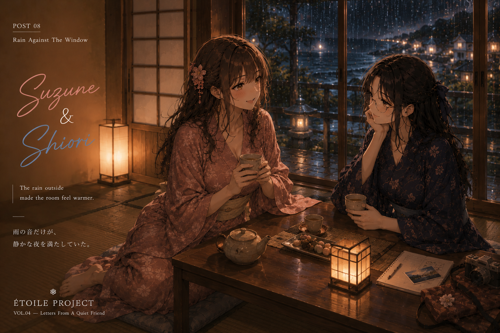
Suzune · Post 08 · Rain Against The Window
"The rain outside made the room feel warmer."
Back at the ryokan. Shiori was writing. I was pretending to read but mostly watching the rain. The tea had gone cold. Neither of us mentioned it.
雨の音だけが、静かな夜を満たしていた。
Suzune · Post 08 — Letters09
Post 04a · Before The Onsen
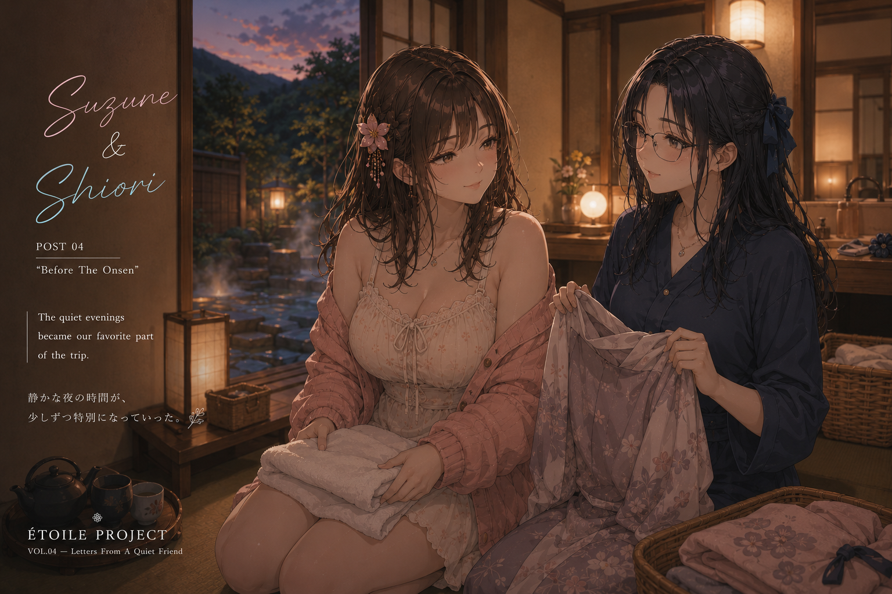
Suzune · Post 04a · Before The Onsen
"The quiet evenings became our favorite part of the trip."
She helped me fold the yukata properly. I'd done it wrong twice. Outside, the outdoor bath was steaming in the cool night air.
静かな夜の時間が、少しずつ特別になっていった。
Suzune · Post 04a — Letters10
Solo 03 · Moonlit Water
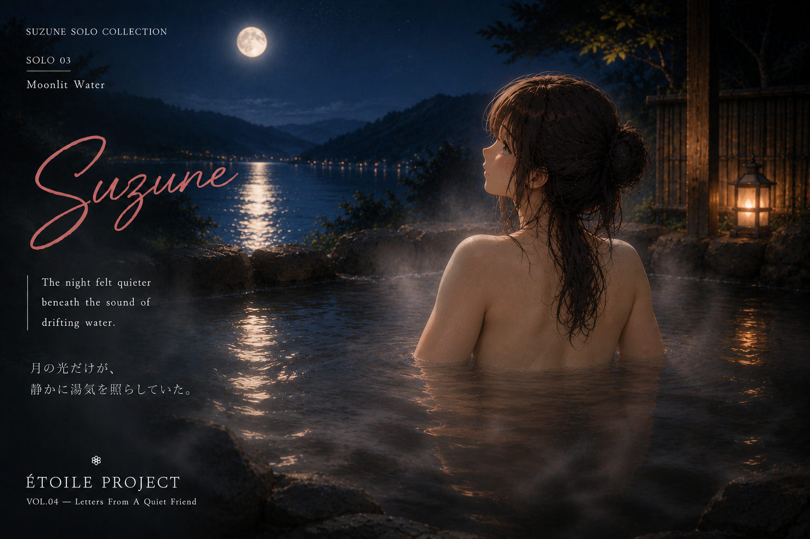
Suzune Solo
Suzune · Solo 03 · Moonlit Water
"The night felt quieter beneath the sound of drifting water."
We went into the outdoor bath separately. I got there first. The full moon was enormous above the lake. I stayed in until the tips of my fingers pruned.
月の光だけが、静かに湯気を照らしていた。
Suzune · Solo 03 — Letters11
Post 02 · Coffee Before The Rain
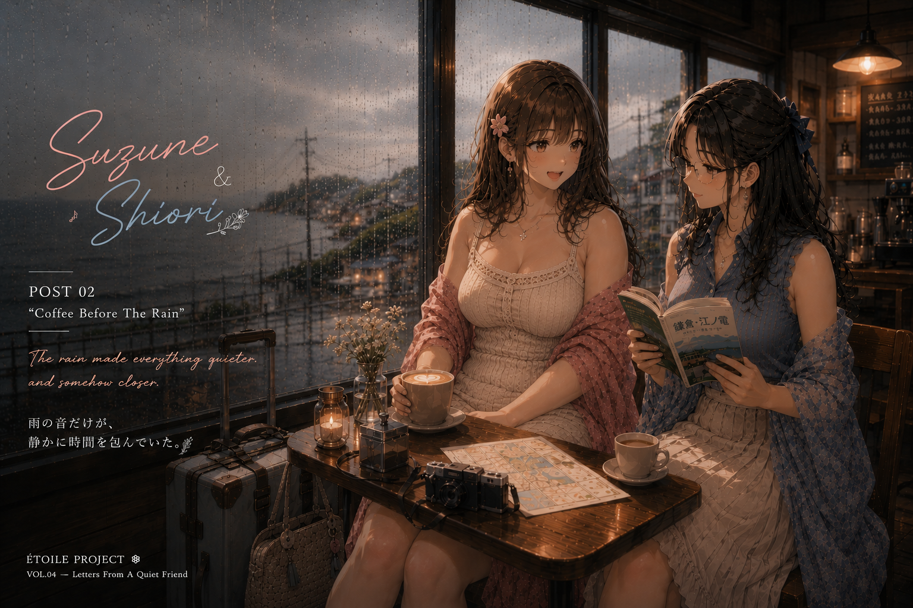
Shiori · Post 02 · Coffee Before The Rain
"The rain made everything quieter, and somehow closer."
We found a small cafe as the storm arrived. Suzune talked. I read the Kamakura–Enoden guidebook and tried to plan the next three days. She had already decided we'd see everything.
雨の音だけが、静かに時間を包んでいた。
Shiori · Post 02 — Letters02
Post 03 · Forest Road After Rain
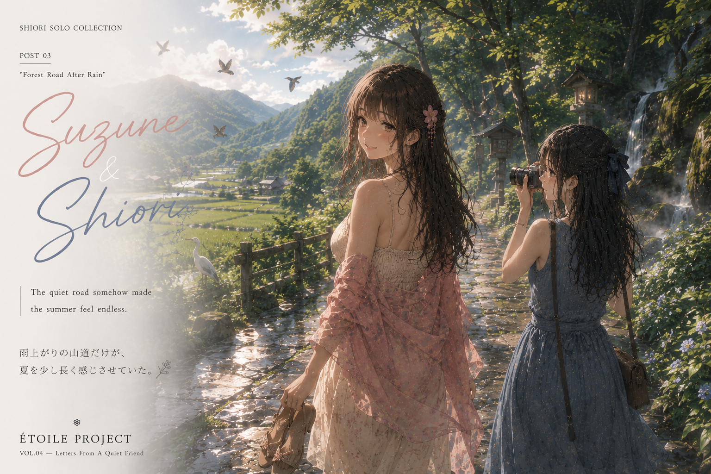
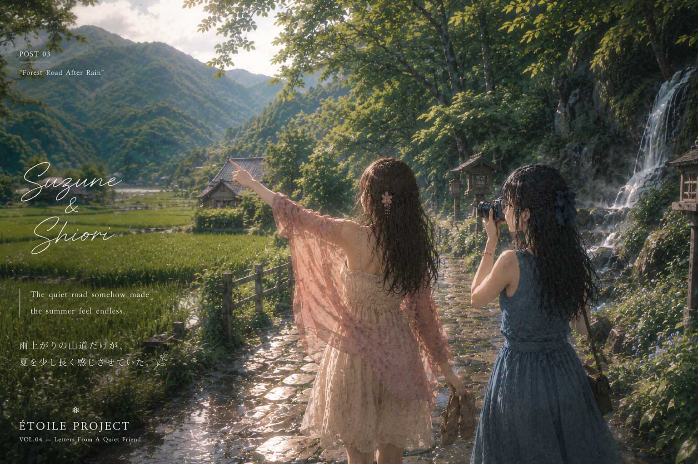
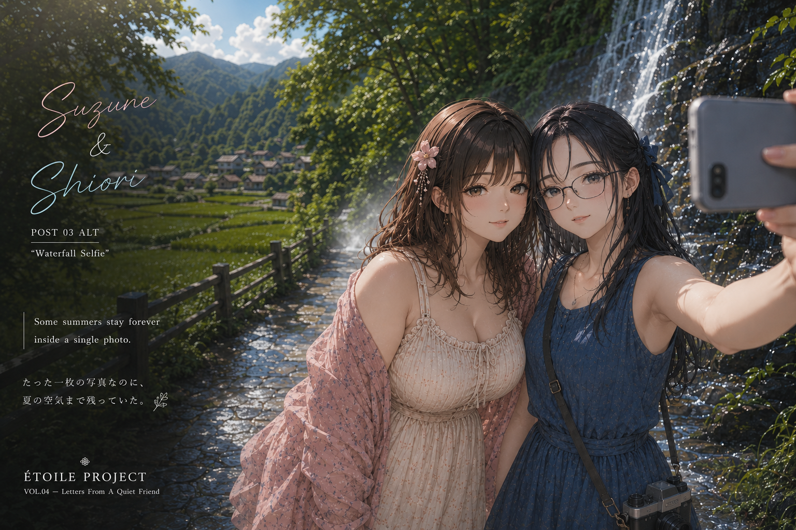
Shiori · Post 03 · Forest Road After Rain
"The quiet road somehow made the summer feel endless."
The mountain path after the rain. Suzune pointed at everything. I photographed everything. At the waterfall, she grabbed my camera arm and said "take one of us." I did. It's the one I kept.
雨上がりの山道だけが、夏を少し長く感じさせていた。たった一枚の写真なのに、夏の空気まで残っていた。
Shiori · Post 03 — Letters03
Post 05 · Rainy Ryokan Evening
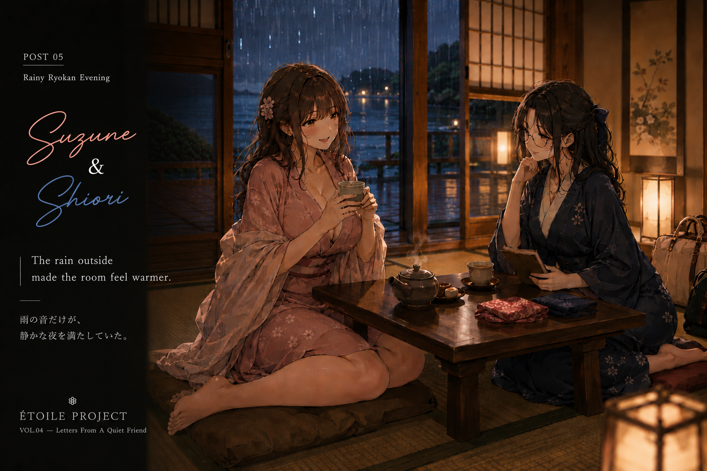
Shiori · Post 05 · Rainy Ryokan Evening
"The rain outside made the room feel warmer."
First evening at the ryokan. The rain was heavy. Suzune held her tea with both hands and told me about a dream she'd had. I listened and took notes in the margins of my book.
雨の音だけが、静かな夜を満たしていた。
Shiori · Post 05 — Letters04
Solo 01 · Film Notes
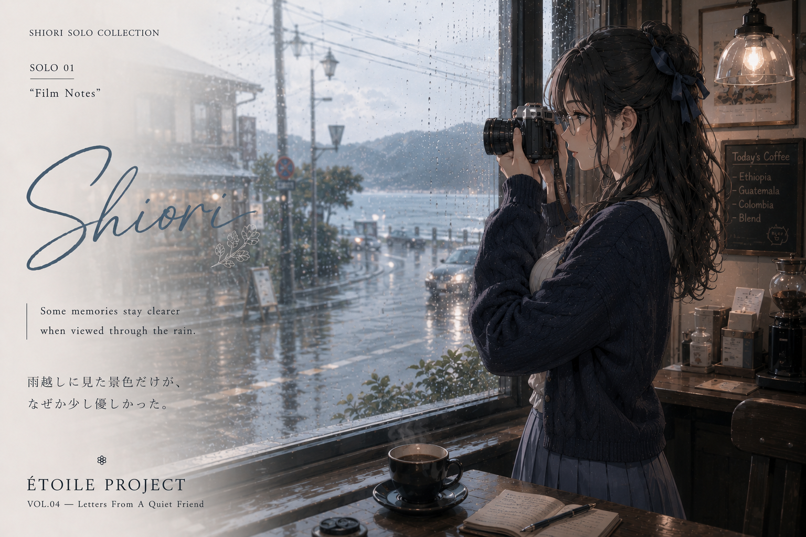
Shiori Solo
Shiori · Solo 01 · Film Notes
"Some memories stay clearer when viewed through the rain."
She'd gone for a walk. I stayed at the cafe with a second coffee and my camera. The street outside was blurred by rain. I shot through the glass. I don't know why that one felt important to keep.
雨越しに見た景色だけが、なぜか少し優しかった。
Shiori · Solo 01 — Letters05
Post 06 · After The Tide
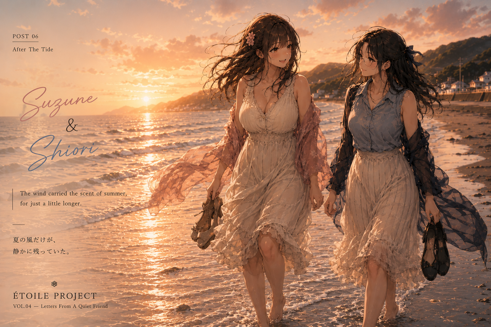
Shiori · Post 06 · After The Tide
"The wind carried the scent of summer, for just a little longer."
We walked back along the shoreline after the tide came in. She was saying something about the color of the sky. I was thinking how light felt different here — slower, gold, wide.
夏の風だけが、静かに残っていた。
Shiori · Post 06 — Letters06
Solo 02 · Evening Tides
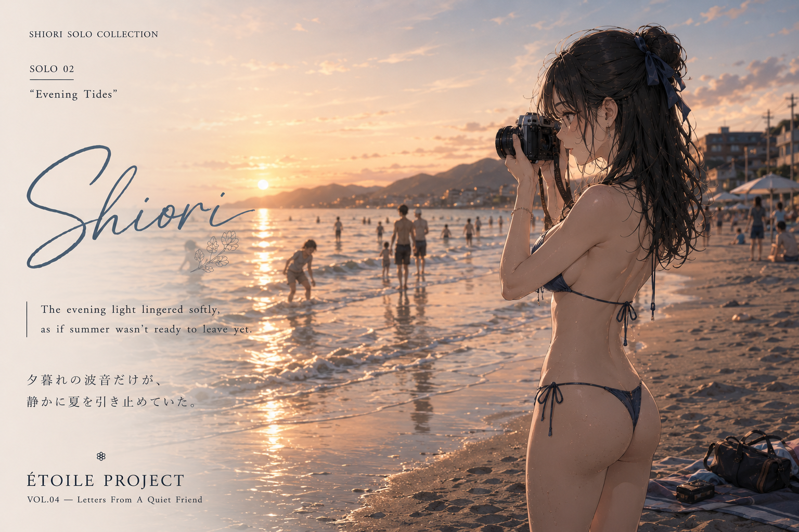
Shiori Solo
Shiori · Solo 02 · Evening Tides
"The evening light lingered softly, as if summer wasn't ready to leave yet."
She was somewhere behind me. I stood at the water's edge with the camera and watched families wade into the waves. The light kept changing. I kept shooting.
夕暮れの波音だけが、静かに夏を引き止めていた。
Shiori · Solo 02 — Letters07
Post 04b · Before The Bath
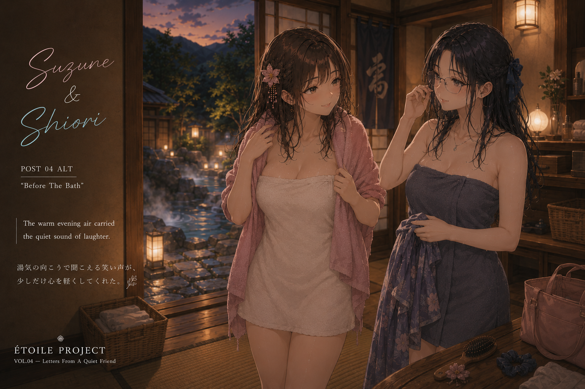
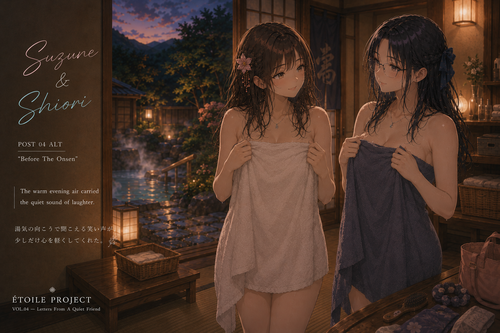
Shiori · Post 04b · Before The Bath
"The warm evening air carried the quiet sound of laughter."
The changing room before the outdoor bath. We could already smell the minerals in the air. She laughed at something and I couldn't help it — I laughed too. I don't even remember what was funny.
湯気の向こうで聞こえる笑い声が、少しだけ心を軽くしてくれた。
Shiori · Post 04b — Letters08
Solo 03 · Quiet Water
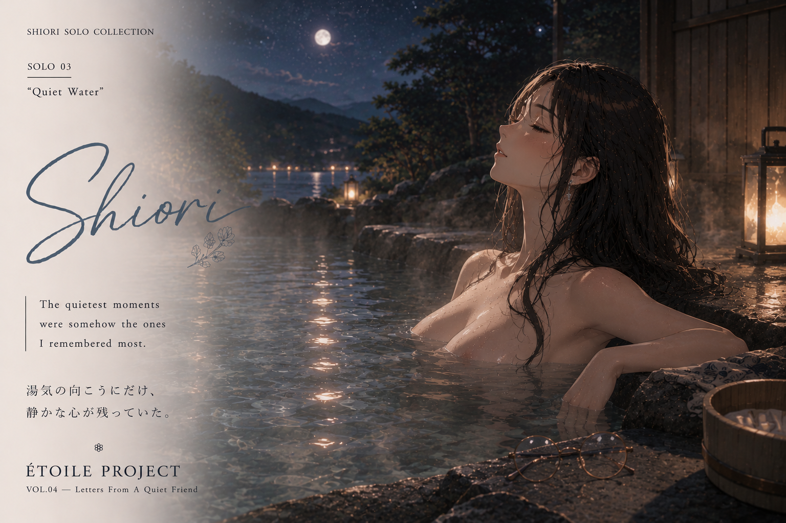
Shiori Solo
Shiori · Solo 03 · Quiet Water
"The quietest moments were somehow the ones I remembered most."
The outdoor bath under the stars. I took off my glasses and set them on the rocks. Everything blurred at the edges. The lantern light, the steam, the lake below. In the water, everything felt very still.
湯気の向こうにだけ、静かな心が残っていた。
Shiori · Solo 03 — Letters09
Post 09 · After The Bath
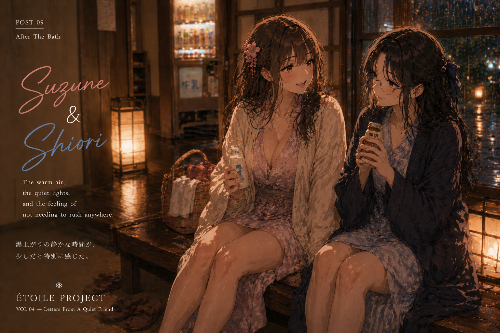
Post 09 · After The Bath
"The warm air, the quiet lights, and the feeling of not needing to rush anywhere."
The vending machine area outside the bath. We bought milk and something cold. We sat for a long time without saying much. It was the kind of quiet you don't need to fill.
湯上がりの静かな時間が、少しだけ特別に感じた。
Suzune & Shiori · Post 09 — Letters12
Post 10 · Morning Checkout
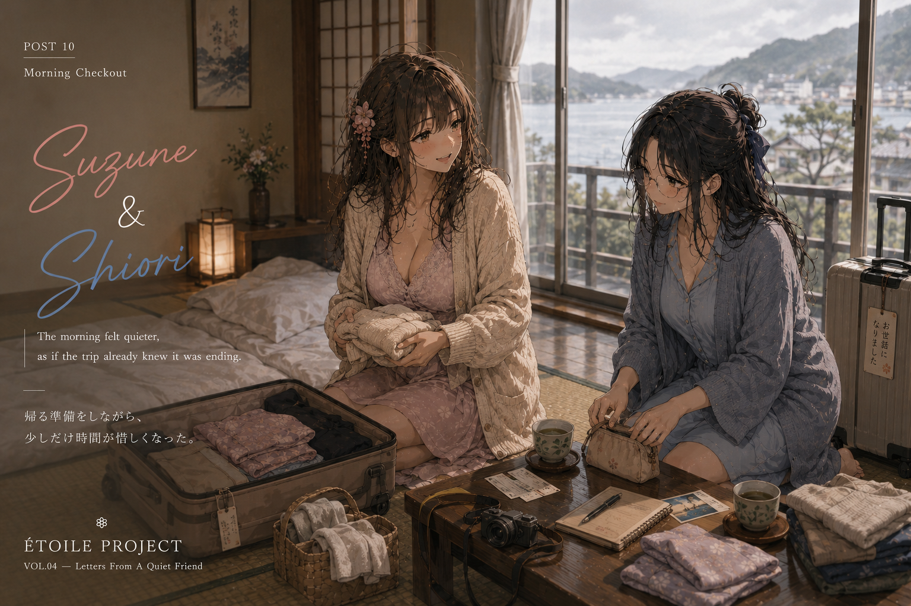
Post 10 · Morning Checkout
"The morning felt quieter, as if the trip already knew it was ending."
We folded everything slowly. The sea and the mountains were visible from the window. The tea had been there for a while. We both knew we were doing it on purpose.
帰る準備をしながら、少しだけ時間が惜しくなった。
Suzune & Shiori · Post 10 — Letters13
Post 11 · Before The Train Leaves
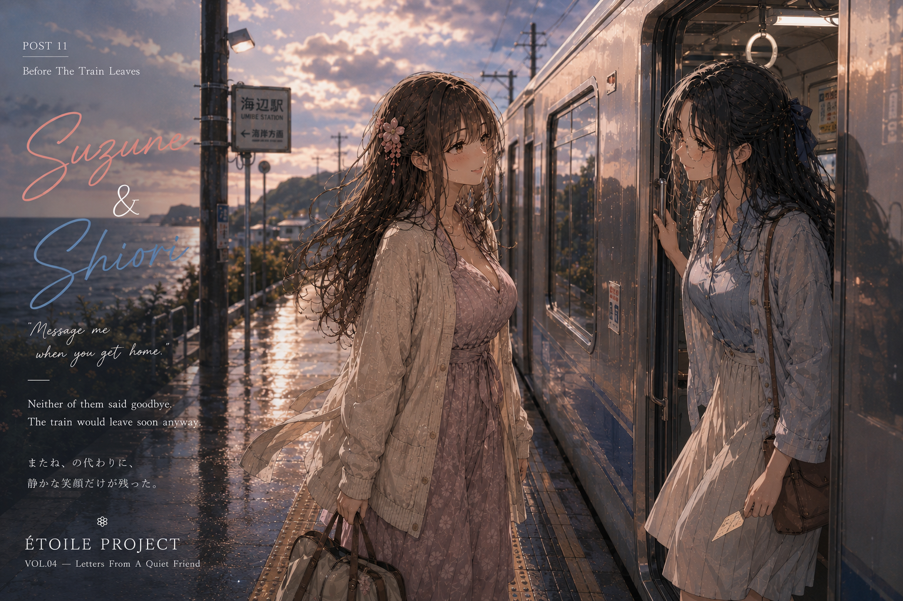
Post 11 · Before The Train Leaves
"Message me when you get home." Neither of them said goodbye. The train would leave soon anyway.
海辺駅. The door was already open. One of us on the platform, one already inside. We looked at each other the way you do when you don't want it to end.
またね、の代わりに、静かな笑顔だけが残った。
Suzune & Shiori · Post 11 — Letters14
"
"Some journeys stay with us, long after the train leaves."
電車が去ったあとも、少しだけ温もりが残っていた。
— Letters From A Quiet Friend · ÉTOILE Vol.04
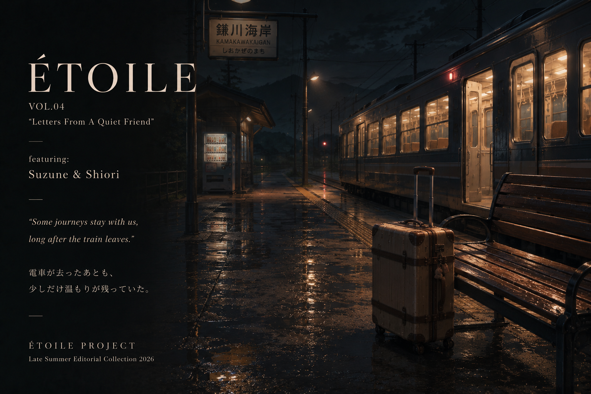
Fin · Vol.04 Complete ✦
Some journeys stay
long after the train leaves
long after the train leaves
電車が去ったあとも、
少しだけ温もりが残っていた。
少しだけ温もりが残っていた。
← Vol.03 · Little Moment
← All Volumes
ÉTOILE · Vol.04 · Letters From A Quiet Friend · Late Summer 2026
Featuring Suzune & Shiori · © 2026 Apecoft Studio · All artwork original
Featuring Suzune & Shiori · © 2026 Apecoft Studio · All artwork original